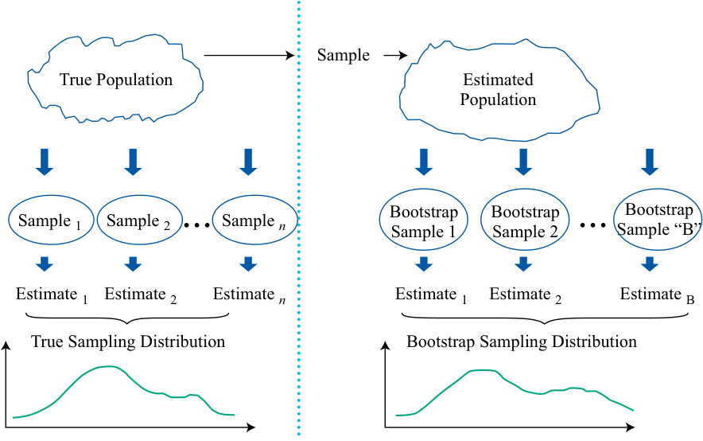
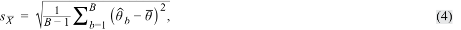
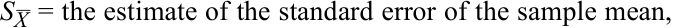
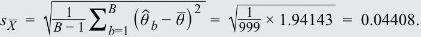
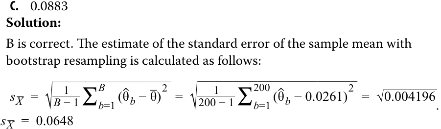
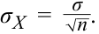
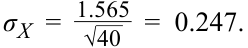

Learning Module 7 Estimation and Inference - Part 2: Bootstrapping and Empirical Sampling Distributions
Volume 1: Quantitative Methods
Learning Module 7 Estimation and Inference
Part 2/2: Bootstrapping and Empirical Sampling Distributions (PDF Pages 215–222)
Tập 1: Phương pháp Định lượng (Quantitative Methods)
Học phần 7: Ước lượng và Suy luận (Estimation and Inference)
Phần 2/2: Phương pháp Bootstrapping và Phân phối Mẫu Thực nghiệm (Bootstrapping and Empirical Sampling Distributions) (Trang PDF 215–222)
| σ2, then the distribution of~~~~ _X_will be approximately normal, with a standard deviation of_σ/√ _n.” |
|---|
| Solution: |
| The statement makes the following mistakes: • Given the conditions in the statement, the distribution of _X_will be approx- imately normal only for large sample sizes. • The statement omits the important element of the central limit theorem that the distribution of X_will have mean_μ. |
| 5. Peter Biggs wants to know how growth managers performed last year. Biggs assumes that the population cross-sectional standard deviation of growth manager returns is 6 percent and that the returns are independent across managers. |
| A.How large a random sample does Biggs need if he wants the standard deviation of the sample means to be 1 percent? |
| B.How large a random sample does Biggs need if he wants the standard deviation of the sample means to be 0.25 percent? Solution: |
| A. The standard deviation or standard error of the sample mean is_σ_ _X=σ / √ _n. Substituting in the values for_σ_ _Xand σ, we have 1% = 6 % /√ _n, or√ _n= 6. Squaring this value, we get a random sample of_n_= 36. |
| B. As in Part A, the standard deviation of sample mean is_σ_ _X=σ /√ _n. Substituting in the values for_σ_ _Xand σ, we have 0.25% = 6 % /√ _n, or√ _n= 24. Squaring this value, we get a random sample of_n_= 576, which is substan- tially larger than for Part A of this question. |
| (Tiếp theo Câu hỏi 4 ở cuối Phần 1:) “...có phương sai $\sigma^2$, thì phân phối của $\bar{X}$ sẽ xấp xỉ chuẩn, với độ lệch chuẩn là $\sigma/\sqrt{n}$.” |
|---|
| Lời giải (Solution): |
| Phát biểu trên mắc phải những sai sót sau: • Với các điều kiện trong phát biểu, phân phối của $\bar{X}$ sẽ chỉ xấp xỉ chuẩn đối với các kích thước mẫu lớn (large sample sizes). • Phát biểu đã bỏ sót yếu tố quan trọng của định lý giới hạn trung tâm rằng phân phối của $\bar{X}$ sẽ có giá trị trung bình bằng $\mu$. |
| 5. Peter Biggs muốn biết các nhà quản lý đầu tư tăng trưởng (growth managers) đã hoạt động như thế nào trong năm ngoái. Biggs giả định rằng độ lệch chuẩn chéo của tổng thể (population cross-sectional standard deviation) đối với tỷ suất sinh lợi của các nhà quản lý tăng trưởng là 6% và tỷ suất sinh lợi là độc lập giữa các nhà quản lý. |
| A. Biggs cần một mẫu ngẫu nhiên lớn đến mức nào nếu ông muốn độ lệch chuẩn của các trung bình mẫu là 1%? |
| B. Biggs cần một mẫu ngẫu nhiên lớn đến mức nào nếu ông muốn độ lệch chuẩn của các trung bình mẫu là 0.25%? Lời giải (Solution): |
| A. Độ lệch chuẩn hay sai số chuẩn của trung bình mẫu là $\sigma_{\bar{X}} = \sigma / \sqrt{n}$. Thay các giá trị của $\sigma_{\bar{X}}$ và $\sigma$ vào, ta có $1\% = 6\% / \sqrt{n}$, hay $\sqrt{n} = 6$. Bình phương giá trị này, ta được mẫu ngẫu nhiên có kích thước $n = 36$. |
| B. Giống như ở Phần A, độ lệch chuẩn của trung bình mẫu là $\sigma_{\bar{X}} = \sigma / \sqrt{n}$. Thay các giá trị của $\sigma_{\bar{X}}$ và $\sigma$ vào, ta có $0.25\% = 6\% / \sqrt{n}$, hay $\sqrt{n} = 24$. Bình phương giá trị này, ta được mẫu ngẫu nhiên có kích thước $n = 576$, lớn hơn đáng kể so với Phần A của câu hỏi này. |
BOOTSTRAPPING AND EMPIRICAL SAMPLING DISTRIBUTIONS
PHƯƠNG PHÁP BOOTSTRAPPING VÀ PHÂN PHỐI MẪU THỰC NGHIỆM (BOOTSTRAPPING AND EMPIRICAL SAMPLING DISTRIBUTIONS)
4
4
describe the use of resampling (bootstrap, jackknife) to estimate the sampling distribution of a statistic
Mô tả việc sử dụng lấy mẫu lại (bootstrap, jackknife) để ước tính phân phối mẫu của một thống kê
We demonstrated how to find the standard error of the sample mean, based on the central limit theorem. We return to the computational tool called resampling , which repeatedly draws samples from the original observed data sample for the statistical inference of population parameters. Bootstrap , one of the most popular resampling methods, uses computer simulation for statistical inference without using an analytical formula such as a z -statistic or t -statistic.
Chúng ta đã minh họa cách tìm sai số chuẩn của trung bình mẫu dựa trên định lý giới hạn trung tâm. Bây giờ chúng ta quay lại công cụ tính toán gọi là lấy mẫu lại (resampling), thực hiện rút mẫu lặp đi lặp lại từ mẫu dữ liệu quan sát ban đầu để suy luận thống kê về các tham số tổng thể. Phương pháp tự thân (Bootstrap), một trong những phương pháp lấy mẫu lại phổ biến nhất, sử dụng mô phỏng máy tính để suy luận thống kê mà không cần sử dụng công thức giải tích chẳng hạn như thống kê $z$ (z-statistic) hay thống kê $t$ (t-statistic).
In bootstrap, we repeatedly draw samples from the original sample, and each resample is of the same size as the original sample. Note that each item drawn is replaced for the next draw (i.e., the identical element is put back into the group so that it can be drawn more than once). Assuming we are looking to find the standard error of sample mean, we take many resamples and then compute the mean of each resample. Note that although some items may appear several times in the resamples, other items may not appear at all.
Trong phương pháp bootstrap, chúng ta liên tục rút các mẫu từ mẫu ban đầu, và mỗi mẫu lấy lại (resample) có cùng kích thước với mẫu ban đầu. Lưu ý rằng mỗi phần tử được rút ra sẽ được hoàn lại cho lần rút tiếp theo (tức là phần tử giống hệt đó được đưa trở lại vào nhóm để nó có thể được rút ra nhiều hơn một lần). Giả sử chúng ta đang tìm cách tính sai số chuẩn của trung bình mẫu, chúng ta lấy nhiều mẫu lấy lại và sau đó tính giá trị trung bình của mỗi mẫu lấy lại. Lưu ý rằng mặc dù một số phần tử có thể xuất hiện nhiều lần trong các mẫu lấy lại, các phần tử khác có thể không xuất hiện lần nào.
Exhibit 5: Bootstrap Resampling
Minh họa 5: Lấy mẫu lại kiểu Tự thân (Exhibit 5: Bootstrap Resampling)

Chú thích hình ảnh: - Bên trái: Tổng thể thực (True Population) $\rightarrow$ Mẫu 1, Mẫu 2, ..., Mẫu $n$ $\rightarrow$ Ước lượng 1, Ước lượng 2, ..., Ước lượng $n$ $\rightarrow$ Phân phối mẫu thực (True Sampling Distribution). - Bên phải: Mẫu (Sample) $\rightarrow$ Tổng thể ước tính (Estimated Population) $\rightarrow$ Mẫu Bootstrap 1, Mẫu Bootstrap 2, ..., Mẫu Bootstrap "B" $\rightarrow$ Ước lượng 1, Ước lượng 2, ..., Ước lượng B $\rightarrow$ Phân phối mẫu Bootstrap (Bootstrap Sampling Distribution).
Subsequently, we construct a sampling distribution with these resamples. The bootstrap sampling distribution (right-hand side of Exhibit 5) will approximate the true sampling distribution. We estimate the standard error of the sample mean using Equation 4. Note that to distinguish the foregoing resampling process from other types of resampling, it is often called model-free resampling or non-parametric resampling.
Tiếp theo, chúng ta xây dựng một phân phối mẫu với các mẫu lấy lại này. Phân phối mẫu bootstrap (phía bên phải của Minh họa 5) sẽ xấp xỉ phân phối mẫu thực sự. Chúng ta ước tính sai số chuẩn của trung bình mẫu bằng Phương trình 4. Lưu ý rằng để phân biệt quy trình lấy mẫu lại vừa nêu với các loại lấy mẫu lại khác, nó thường được gọi là lấy mẫu lại phi mô hình (model-free resampling) hoặc lấy mẫu lại phi tham số (non-parametric resampling).

where:
trong đó:

-
B = the number of resamples drawn from the original sample,
-
θˆ b = the mean of a resample, and
-
θ = the mean across all the resample means.
- $s_{\bar{X}} =$ ước lượng sai số chuẩn của trung bình mẫu (the estimate of the standard error of the sample mean),
- $B =$ số lượng mẫu lấy lại (resamples) được rút ra từ mẫu ban đầu,
- $\hat{\theta}_b =$ giá trị trung bình của một mẫu lấy lại thứ $b$, và
- $\bar{\theta} =$ giá trị trung bình của tất cả các trung bình mẫu lấy lại.
Bootstrap is one of the most powerful and widely used tools for statistical inference. As we have explained, it can be used to estimate the standard error of a sample mean. Similarly, bootstrap can be used to find the standard error or construct confidence intervals for the statistic of other population parameters, such as the median, which does not apply to the previously discussed methodologies. Compared with conventional statistical methods, bootstrap does not rely on an analytical formula to estimate the distribution of the estimators. It is a simple but powerful method for any complicated estimators and particularly useful when no analytical formula is available. In addition, bootstrap has potential advantages in accuracy. Given these advantages, bootstrap can be applied widely in finance, such as for historical simulations in asset allocation or in gauging an investment strategy’s performance against a benchmark.
Bootstrap là một trong những công cụ mạnh mẽ nhất và được sử dụng rộng rãi nhất để suy luận thống kê. Như chúng ta đã giải thích, nó có thể được sử dụng để ước tính sai số chuẩn của một trung bình mẫu. Tương tự, bootstrap có thể được sử dụng để tìm sai số chuẩn hoặc xây dựng khoảng tin cậy cho thống kê của các tham số tổng thể khác, chẳng hạn như trung vị (median), vốn không áp dụng được các phương pháp luận đã thảo luận trước đó. So với các phương pháp thống kê truyền thống, bootstrap không dựa vào công thức giải tích để ước tính phân phối của các ước lượng. Đây là một phương pháp đơn giản nhưng mạnh mẽ cho bất kỳ ước lượng phức tạp nào và đặc biệt hữu ích khi không có sẵn công thức giải tích. Ngoài ra, bootstrap còn có những lợi thế tiềm năng về độ chính xác. Với những ưu điểm này, bootstrap có thể được áp dụng rộng rãi trong tài chính, chẳng hạn như cho các mô phỏng lịch sử trong phân bổ tài sản hoặc trong việc đo lường hiệu quả của một chiến lược đầu tư so với chỉ số chuẩn.
EXAMPLE 4
VÍ DỤ 4 (EXAMPLE 4)
Bootstrap Resampling Illustration
Minh họa Lấy mẫu lại kiểu Tự thân (Bootstrap Resampling Illustration)
Exhibit 6 displays a set of 12 monthly returns of a rarely traded stock, shown in Column A. Our aim is to calculate the standard error of the sample mean. Using the bootstrap resampling method, a series of bootstrap samples, labelled as “resamples” (with replacement) are drawn from the sample of 12 returns. Notice how some of the returns from data sample in Column A feature more than once in some of the resamples (e.g., 0.055 features twice in Resample 1).
Minh họa 6 hiển thị một tập hợp gồm 12 tỷ suất sinh lợi hàng tháng của một cổ phiếu ít được giao dịch, được trình bày trong Cột A. Mục tiêu của chúng ta là tính sai số chuẩn của trung bình mẫu. Sử dụng phương pháp lấy mẫu lại bootstrap, một chuỗi các mẫu bootstrap, được dán nhãn là “Mẫu lấy lại” (Resample – có hoàn lại) được rút ra từ mẫu gồm 12 tỷ suất sinh lợi. Hãy chú ý cách một số tỷ suất sinh lợi từ mẫu dữ liệu ở Cột A xuất hiện nhiều hơn một lần trong một số mẫu lấy lại (ví dụ: $0.055$ xuất hiện hai lần trong Mẫu lấy lại 1).
Exhibit 6: Rarely Traded Stock, 12 Monthly Returns
Minh họa 6: Cổ phiếu Ít Giao dịch, 12 Tỷ suất sinh lợi Hàng tháng (Exhibit 6: Rarely Traded Stock, 12 Monthly Returns)
| Column A | Resample 1 | Resample 2 | Resample 3 | Resample 1,000 |
|
|---|---|---|---|---|---|
| −0.096 | 0.055 | −0.096 | −0.033 | … | −0.072 |
| −0.132 | −0.033 | 0.055 | −0.132 | … | 0.255 |
| −0.191 | 0.255 | 0.055 | −0.157 | … | 0.055 |
| −0.096 | −0.033 | −0.157 | 0.255 | … | 0.296 |
| 0.055 | 0.255 | −0.096 | −0.132 | … | 0.055 |
| −0.053 | −0.157 | −0.053 | −0.191 | … | −0.096 |
| −0.033 | −0.053 | −0.096 | 0.055 | … | 0.296 |
| 0.296 | −0.191 | −0.132 | 0.255 | … | −0.132 |
| 0.055 | −0.132 | −0.132 | 0.296 | … | 0.055 |
| −0.072 | −0.096 | 0.055 | −0.096 | … | −0.096 |
| 0.255 | 0.055 | −0.072 | 0.055 | … | −0.191 |
| −0.157 | −0.157 | −0.053 | −0.157 | … | 0.055 |
| Sample mean | −0.019 | −0.060 | 0.001 | … | 0.040 |
| Cột A (Column A) | Mẫu lấy lại 1 (Resample 1) | Mẫu lấy lại 2 (Resample 2) | Mẫu lấy lại 3 (Resample 3) | … | Mẫu lấy lại 1,000 (Resample 1,000) |
|---|---|---|---|---|---|
| −0.096 | 0.055 | −0.096 | −0.033 | … | −0.072 |
| −0.132 | −0.033 | 0.055 | −0.132 | … | 0.255 |
| −0.191 | 0.255 | 0.055 | −0.157 | … | 0.055 |
| −0.096 | −0.033 | −0.157 | 0.255 | … | 0.296 |
| 0.055 | 0.255 | −0.096 | −0.132 | … | 0.055 |
| −0.053 | −0.157 | −0.053 | −0.191 | … | −0.096 |
| −0.033 | −0.053 | −0.096 | 0.055 | … | 0.296 |
| 0.296 | −0.191 | −0.132 | 0.255 | … | −0.132 |
| 0.055 | −0.132 | −0.132 | 0.296 | … | 0.055 |
| −0.072 | −0.096 | 0.055 | −0.096 | … | −0.096 |
| 0.255 | 0.055 | −0.072 | 0.055 | … | −0.191 |
| −0.157 | −0.157 | −0.053 | −0.157 | … | 0.055 |
| Trung bình mẫu (Sample mean) | −0.019 | −0.060 | 0.001 | … | 0.040 |
Drawing 1,000 such samples, we obtain 1,000 sample means. The mean across all resample means is −0.01367. The sum of squares of the differences between _ each sample mean and the mean across all resample means ( ∑ Bb =1( θ ˆ b − θ )2 ) is 1.94143. Using Equation 4, we calculate an estimate of the standard error of the sample mean:
Rút 1,000 mẫu như vậy, chúng ta thu được 1,000 trung bình mẫu. Giá trị trung bình của tất cả các trung bình mẫu lấy lại là $-0.01367$. Tổng bình phương các chênh lệch giữa mỗi trung bình mẫu và giá trị trung bình của tất cả các trung bình mẫu lấy lại ($\sum_{b=1}^{B}(\hat{\theta}_b - \bar{\theta})^2$) là $1.94143$. Sử dụng Phương trình 4, chúng ta tính được ước lượng sai số chuẩn của trung bình mẫu:

Jackknife is another resampling technique for statistical inference of population parameters. Unlike bootstrap, which repeatedly draws samples with replacement, jackknife samples are selected by taking the original observed data sample and leaving out one observation at a time from the set (and not replacing it). Jackknife method is often used to reduce the bias of an estimator, and other applications include finding the standard error and confidence interval of an estimator. According to its computation procedure, we can conclude that jackknife produces similar results for every run, whereas bootstrap usually gives different results because bootstrap resamples are randomly drawn. For a sample of size n , jackknife usually requires n repetitions, whereas with bootstrap, we are left to determine how many repetitions are appropriate.
Jackknife là một kỹ thuật lấy mẫu lại khác để suy luận thống kê về các tham số tổng thể. Không giống như bootstrap vốn liên tục rút các mẫu có hoàn lại (with replacement), các mẫu jackknife được chọn bằng cách lấy mẫu dữ liệu quan sát ban đầu và loại bỏ lần lượt từng quan sát một ra khỏi tập hợp (và không hoàn lại). Phương pháp Jackknife thường được sử dụng để giảm độ chệch (bias) của một ước lượng, và các ứng dụng khác bao gồm tìm sai số chuẩn và khoảng tin cậy của một ước lượng. Theo thủ tục tính toán của nó, chúng ta có thể kết luận rằng jackknife tạo ra các kết quả tương tự nhau cho mỗi lần chạy, trong khi bootstrap thường cho ra các kết quả khác nhau bởi vì các mẫu lấy lại bootstrap được rút ngẫu nhiên. Đối với một mẫu có kích thước $n$, jackknife thường yêu cầu $n$ lần lặp lại, trong khi với bootstrap, chúng ta phải tự xác định xem bao nhiêu lần lặp lại là phù hợp.
QUESTION SET
BỘ CÂU HỎI (QUESTION SET)
- An analyst in a real estate investment company is researching the housing market of the Greater Boston area. From a sample of collected house sale price data in the past year, she estimates the median house price of the area. To find the standard error of the estimated median, she is considering two options:
- Một nhà phân tích tại một công ty đầu tư bất động sản đang nghiên cứu thị trường nhà ở của khu vực Greater Boston. Từ một mẫu dữ liệu giá bán nhà thu thập được trong năm qua, cô ước tính giá nhà trung vị (median house price) của khu vực. Để tìm sai số chuẩn của trung vị ước tính, cô đang cân nhắc hai phương án:
Option 1: The standard error of the sample median can be given by √_s__ _n, where s denotes the sample standard deviation and n denotes the sample size.
Phương án 1: Sai số chuẩn của trung vị mẫu có thể được tính bằng $s/\sqrt{n}$, trong đó $s$ ký hiệu độ lệch chuẩn mẫu và $n$ ký hiệu kích thước mẫu.
Option 2: Apply the bootstrap method to construct the sampling distribution of the sample median, and then compute the standard error using Equation 7.
Phương án 2: Áp dụng phương pháp bootstrap để xây dựng phân phối mẫu của trung vị mẫu, và sau đó tính sai số chuẩn bằng Phương trình 4 (trong tài liệu gốc ghi Equation 7).
Which of the following statements is accurate?
Phát biểu nào sau đây là chính xác?
-
A. Option 1 is suitable to find the standard error of the sample median.
-
B. Option 2 is suitable to find the standard error of the sample median.
-
C. Both options are suitable to find the standard error of the sample median.
- A. Phương án 1 phù hợp để tìm sai số chuẩn của trung vị mẫu.
- B. Phương án 2 phù hợp để tìm sai số chuẩn của trung vị mẫu.
- C. Cả hai phương án đều phù hợp để tìm sai số chuẩn của trung vị mẫu.
Solution:
Lời giải (Solution):
B is correct. Option 1 is valid for estimating the standard error of the sample mean but not for that of the sample median, which is not based on the given formula. Thus, both A and C are incorrect. The bootstrap method is a simple way to find the standard error of an estimator even if no analytical formula is available or it is too complicated.
B đúng. Phương án 1 có hiệu lực để ước tính sai số chuẩn của trung bình mẫu (sample mean) nhưng không áp dụng được cho sai số chuẩn của trung vị mẫu (sample median), vốn không dựa trên công thức đã cho. Do đó, cả A và C đều sai. Phương pháp bootstrap là một cách đơn giản để tìm sai số chuẩn của một ước lượng ngay cả khi không có sẵn công thức giải tích hoặc công thức quá phức tạp.
Having covered many of the fundamental concepts of sampling and estimation, we now focus on sampling issues of special concern to analysts. The quality of inferences depends on the quality of the data as well as on the quality of the sampling plan used. Financial data pose special problems, and sampling plans frequently reflect one or more biases. The next section examines these issues.
Sau khi đã trình bày nhiều khái niệm cơ bản về lấy mẫu và ước lượng, bây giờ chúng ta tập trung vào các vấn đề lấy mẫu được các nhà phân tích đặc biệt quan tâm. Chất lượng của các suy luận phụ thuộc vào chất lượng của dữ liệu cũng như chất lượng của kế hoạch lấy mẫu được sử dụng. Dữ liệu tài chính đặt ra những vấn đề đặc biệt, và các kế hoạch lấy mẫu thường phản ánh một hoặc nhiều sự thiên lệch (biases). Phần tiếp theo xem xét các vấn đề này.
- Otema Chi has a spreadsheet with 108 monthly returns for shares in Marunou Corporation. He writes a software program that uses bootstrap resampling to create 200 resamples of this Marunou data by sampling with replacement. Each resample has 108 data points. Chi’s program calculates the mean of each of the 200 resamples, and then it calculates that the mean of these 200 resample means is 0.0261. The program subtracts 0.0261 from each of the 200 resample means, squares each of these 200 differences, and adds the squared differences together. The result is 0.835. The program then calculates an estimate of the standard error of the sample mean.
The estimated standard error of the sample mean is closest to:
- Otema Chi có một bảng tính gồm 108 tỷ suất sinh lợi hàng tháng của cổ phiếu Marunou Corporation. Anh viết một chương trình phần mềm sử dụng lấy mẫu lại bootstrap để tạo ra 200 mẫu lấy lại (resamples) của dữ liệu Marunou này bằng cách lấy mẫu có hoàn lại. Mỗi mẫu lấy lại có 108 điểm dữ liệu. Chương trình của Chi tính giá trị trung bình của mỗi mẫu trong số 200 mẫu lấy lại, và sau đó tính ra rằng giá trị trung bình của 200 trung bình mẫu lấy lại này là $0.0261$. Chương trình lấy mỗi giá trị trong số 200 trung bình mẫu lấy lại trừ đi $0.0261$, bình phương mỗi chênh lệch trong 200 chênh lệch này, và cộng các bình phương chênh lệch lại với nhau. Kết quả là $0.835$. Chương trình sau đó tính một ước lượng cho sai số chuẩn của trung bình mẫu.
A. 0.0115
Sai số chuẩn ước tính của trung bình mẫu gần nhất với:
B. 0.0648
- A. 0.0115
- B. 0.0648
- C. 0.0883

Lời giải (Solution):
B đúng. Ước lượng sai số chuẩn của trung bình mẫu bằng lấy mẫu lại bootstrap được tính như sau:
~~PRACTICE PROBLEMS~~
BÀI TẬP THỰC HÀNH (PRACTICE PROBLEMS)
1. Which one of the following statements is true about non-probability sampling?
1. Phát biểu nào sau đây là đúng về lấy mẫu phi xác suất (non-probability sampling)?
-
A. There is significant risk that the sample is not representative of the population.
-
B. Every member of the population has an equal chance of being selected for the sample.
-
C. Using judgment guarantees that population subdivisions of interest are represented in the sample.
- A. Có rủi ro đáng kể là mẫu không mang tính đại diện cho tổng thể.
- B. Mọi phần tử của tổng thể đều có cơ hội ngang nhau để được chọn vào mẫu.
- C. Việc sử dụng phán đoán đảm bảo rằng các phân nhóm tổng thể được quan tâm đều có đại diện trong mẫu.
2. The best approach for creating a stratified random sample of a population involves:
2. Cách tiếp cận tốt nhất để tạo ra một mẫu ngẫu nhiên phân tầng (stratified random sample) của một tổng thể bao gồm:
-
A. drawing an equal number of simple random samples from each subpopulation.
-
B. selecting every k th member of the population until the desired sample size is reached.
-
C. drawing simple random samples from each subpopulation in sizes proportional to the relative size of each subpopulation.
- A. rút một số lượng bằng nhau các mẫu ngẫu nhiên đơn giản từ mỗi tổng thể con.
- B. chọn mỗi phần tử thứ $k$ của tổng thể cho đến khi đạt được kích thước mẫu mong muốn.
- C. rút các mẫu ngẫu nhiên đơn giản từ mỗi tổng thể con với kích thước tỷ lệ thuận với quy mô tương đối của mỗi tổng thể con.
3. A population has a non-normal distribution with mean µ and variance σ2 . The sampling distribution of the sample mean computed from samples of large size from that population will have:
3. Một tổng thể có phân phối không chuẩn (non-normal distribution) với giá trị trung bình $\mu$ và phương sai $\sigma^2$. Phân phối mẫu của trung bình mẫu được tính từ các mẫu có kích thước lớn từ tổng thể đó sẽ có:
-
A. the same distribution as the population distribution.
-
B. its mean approximately equal to the population mean.
-
C. its variance approximately equal to the population variance.
- A. cùng phân phối với phân phối của tổng thể.
- B. giá trị trung bình của nó xấp xỉ bằng giá trị trung bình của tổng thể.
- C. phương sai của nó xấp xỉ bằng phương sai của tổng thể.
4. A sample mean is computed from a population with a variance of 2.45. The sample size is 40. The standard error of the sample mean is closest to:
4. Một trung bình mẫu được tính từ một tổng thể có phương sai là $2.45$. Kích thước mẫu là $40$. Sai số chuẩn của trung bình mẫu gần nhất với:
-
A. 0.039.
-
B. 0.247.
-
C. 0.387.
- A. 0.039.
- B. 0.247.
- C. 0.387.
5. Compared with bootstrap resampling, jackknife resampling:
5. So với lấy mẫu lại kiểu tự thân (bootstrap resampling), lấy mẫu lại kiểu jackknife (jackknife resampling):
-
A. is done with replacement.
-
B. usually requires that the number of repetitions is equal to the sample size.
-
C. produces dissimilar results for every run because resamples are randomly drawn.
- A. được thực hiện có hoàn lại (with replacement).
- B. thường đòi hỏi số lần lặp lại bằng với kích thước mẫu.
- C. tạo ra các kết quả khác nhau cho mỗi lần chạy bởi vì các mẫu lấy lại được rút ngẫu nhiên.
~~SOLUTIONS~~
LỜI GIẢI (SOLUTIONS)
-
A is correct. Because non-probability sampling is dependent on factors other than probability considerations, such as a sampler’s judgment or the convenience to access data, there is a significant risk that non-probability sampling might generate a non-representative sample.
-
C is correct. Stratified random sampling involves dividing a population into subpopulations based on one or more classification criteria. Then, simple random samples are drawn from each subpopulation in sizes proportional to the relative size of each subpopulation. These samples are then pooled to form a stratified random sample.
-
B is correct. Given a population described by any probability distribution (normal or non-normal) with finite variance, the central limit theorem states that the sampling distribution of the sample mean will be approximately normal, with the mean approximately equal to the population mean, when the sample size is large.
-
B is correct. Taking the square root of the known population variance to determine the population standard deviation (σ) results in
- σ = √_ 2.45 = 1.565 .
-
A đúng. Bởi vì lấy mẫu phi xác suất phụ thuộc vào các yếu tố ngoài những cân nhắc về xác suất, chẳng hạn như phán đoán của người lấy mẫu hoặc sự thuận tiện trong việc tiếp cận dữ liệu, nên có một rủi ro đáng kể rằng lấy mẫu phi xác suất có thể tạo ra một mẫu không mang tính đại diện.
-
C đúng. Lấy mẫu ngẫu nhiên phân tầng bao gồm việc chia một tổng thể thành các tổng thể con dựa trên một hoặc nhiều tiêu chí phân loại. Sau đó, các mẫu ngẫu nhiên đơn giản được rút ra từ mỗi tổng thể con với kích thước tỷ lệ thuận với quy mô tương đối của mỗi tổng thể con. Các mẫu này sau đó được gộp lại để tạo thành một mẫu ngẫu nhiên phân tầng.
-
B đúng. Cho một tổng thể được mô tả bởi bất kỳ phân phối xác suất nào (chuẩn hoặc không chuẩn) với phương sai hữu hạn, định lý giới hạn trung tâm phát biểu rằng phân phối mẫu của trung bình mẫu sẽ xấp xỉ chuẩn, với giá trị trung bình xấp xỉ bằng giá trị trung bình của tổng thể, khi kích thước mẫu lớn.
-
B đúng. Lấy căn bậc hai của phương sai tổng thể đã biết để xác định độ lệch chuẩn tổng thể ($\sigma$) cho kết quả:
- $\sigma = \sqrt{2.45} = 1.565$.
The formula for the standard error of the sample mean (σX), based on a known sample size ( n ), is
Công thức tính sai số chuẩn của trung bình mẫu ($\sigma_{\bar{X}}$), dựa trên kích thước mẫu đã biết ($n$), là:

Therefore,
Do đó,

- B is correct. For a sample of size n , jackknife resampling usually requires n repetitions. In contrast, with bootstrap resampling, we are left to determine how many repetitions are appropriate.
- B đúng. Đối với một mẫu có kích thước $n$, lấy mẫu lại jackknife thường yêu cầu $n$ lần lặp lại. Ngược lại, với lấy mẫu lại bootstrap, chúng ta phải tự xác định xem bao nhiêu lần lặp lại là phù hợp.